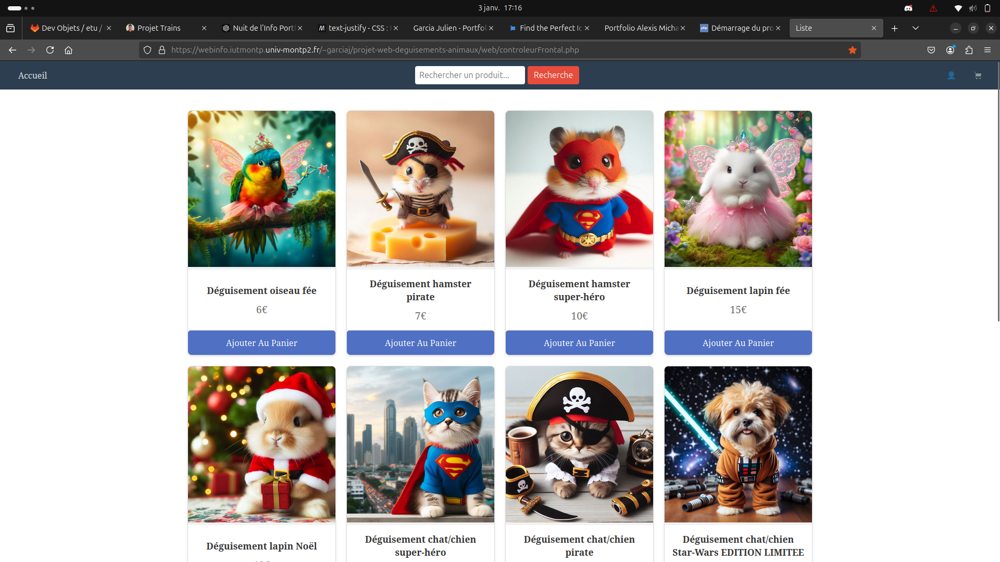
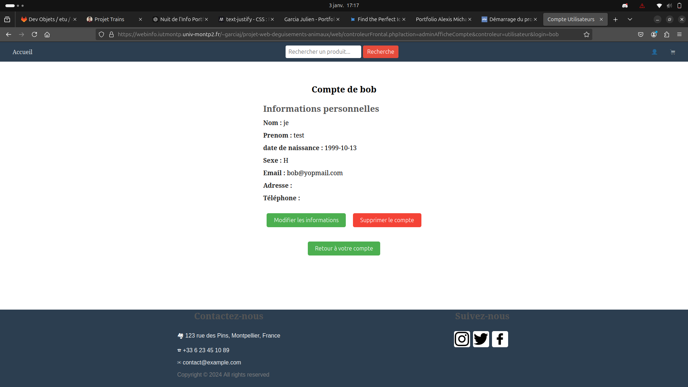

Site E-Commerce
...
Contexte du Projet
Nous devions réaliser un site de e-commerce proposant des produits de notre choix, sans restrictions particulières, avec un rendu final prévu pour le 23 novembre. L’objectif pédagogique de ce projet était de mettre en œuvre les techniques apprises en cours tout en respectant les critères de notation établis, notamment la gestion des produits via un MVC et l’hébergement sur le serveur de l’IUT.
Méthodes de Travail et Résultats Obtenus
Le projet a été réalisé en groupe de trois étudiants, en respectant les consignes suivantes :
-
Organisation et planning
- Définition du thème : Nous avons choisi de vendre des gadgets humoristiques inspirés des mèmes Internet.
- Configuration du dépôt GitLab pour partager et suivre l’avancement du projet.
- Hébergement du site sur le serveur webinfo avec des droits configurés via SSH et SFTP.
-
Fonctionnalités développées
- Une page listant les produits disponibles, avec affichage dynamique des informations depuis une base de données SQL.
- Une page de détails pour chaque produit, incluant son prix, sa description et un bouton "Ajouter au panier" (non fonctionnel à ce stade, comme demandé).
- Un système d’administration pour ajouter et modifier les produits directement depuis l’interface Web.
-
Résultats obtenus
- Le site est fonctionnel, hébergé et accessible à l’adresse suivante : ici
- Le dépôt Git contient un historique propre et documenté des commits, reflétant la répartition du travail entre les membres du groupe.


Compétences Développées
HTML
CSS
PHP
Scrum
Ma Contribution
Dans ce projet, j’ai contribué à la gestion des utilisateurs avec les pages d'inscription, de connexion et de profil
Ces contributions ont renforcé l’aspect éducatif et interactif de notre projet, tout en respectant les contraintes de temps imposées par l’événement.